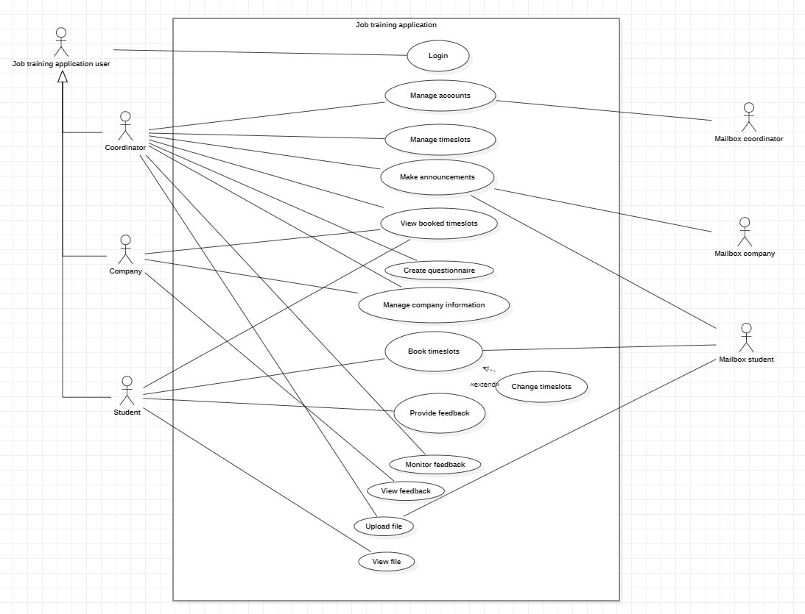
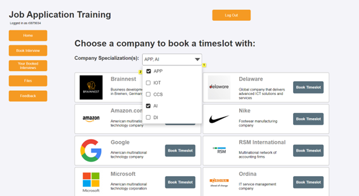
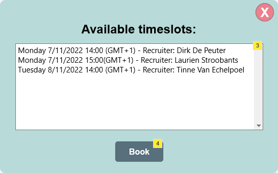
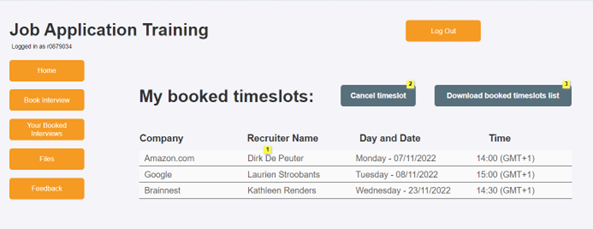

Requirements Analysis for Job Application Training Webapp
This project was part of my Requirements Analysis class at Thomas More. In this project, I worked with a team to make a web application for a client who is our study coach (a teacher at the university).
Background information
The Job Application Training is provided for graduating IT students at Thomas More Hogeschool by the coordinators. The third year students get the chance to participate in a mock job interview with a designated recruiter from participating IT companies. Currently, this job application training is coordinated by 2 ITF lecturers using Word and Excel documents, email messages and multiple other platforms. This approach of maintaining the information regarding bookings and appointments with the use of many different channels and making it available on various platforms by the coordinators is very labour-intensive. The coordinators have to keep track of this information and make sure it is up-to-date and accurate by continuously communicating with the parties involved (student and company), which can be confusing and lead to miscommunication and delays.
About this app
The main goal of the requested web application is to simplify the administration process, and to allow the coordinator to easily manage the booking and appointment information about the involved parties. This will result in making the coordinator's job less labour-intensive. More specifically, the parties involved will experience the following benefits from this new system:
- Coordinators will spend less time managing student accounts, communicating with the students and companies, and performing labour-intensive tasks. Booking interviews, managing appointments, and providing feedback will be managed easily.
- Companies will be able to easily share and update information about themselves.
- Students will be able to easily view the participating companies, and more efficiently schedule interviews. Information on scheduled interviews will be more clearly available to them, reducing the risk of forgotten and overlapping interviews. They should still have the option to cancel or reschedule an interview before a deadline.
My role in the project
Since this project was a part of the Requirements Analysis class, our work was more about analysing the client's request and determining their expectations for the end product. I took part in interviewing the client, extracting functionalities, drawing out the use case diagram, making prototypes for how the app would potentially look like, and finally writing a report containing all the different use cases (functionalities) and each's description. This report would then serve as the starting point later on for the next analysis and design team when drawing out the Entity Relationship Diagram (ERD), and for the developers when programming the actual end product.
Besides the previously mentioned tasks, I was specifically resonsible at the end for reviewing and proofreading the team's report, checking the consistency of it, and finally submitting it.
Project Demo
Use Case Diagram
StarUML was the used software to model the diagram.
Prototypes
I was responsible for making the prototypes for the pages to book a timeslot and to view the booked timeslots. Axure is the used software here.
  Feel free to view the entire prototype by downloading the full Axure file: Download Prototypes
What I learned during this project
Soft Skills
- Team work.
- Communication in a non-technical way with clients.
- Agile working and Scrum.
- Time management.
Technical Skills
- Making use case diagrams using StarUML.
- Prototyping using Axure.
- Requirements analysis documenting.
- Working with Trello.
- Using Microsoft Teams to communicate.